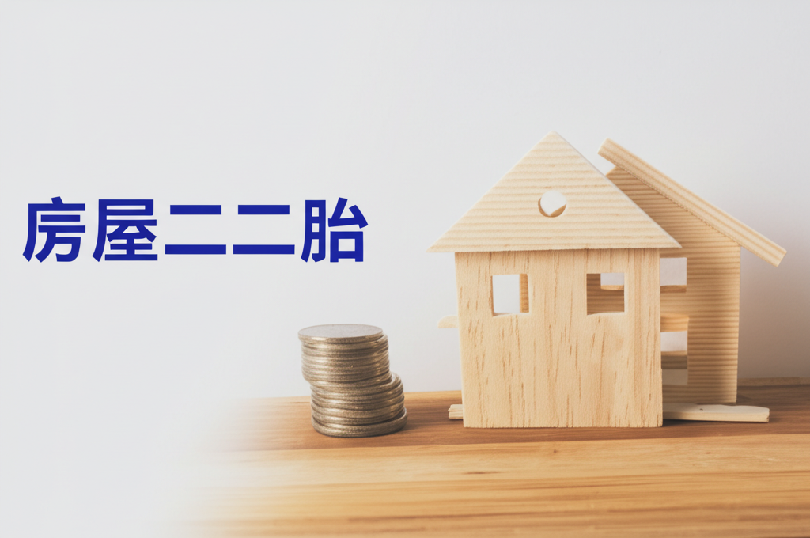

房屋二胎
引言
房屋二胎，顧名思義，就是將已經抵押給銀行或其他金融機構的房屋，再次抵押以獲得貸款。在資金需求緊急，但又不想出售房產的情況下，房屋二胎提供了一種可行的融資途徑。然而，房屋二胎的利率通常較高，風險也相對較大，需要審慎評估。本文將深入探討房屋二胎的各個方面，幫助讀者更好地了解並做出明智的決策。
主體內容
第一點：房屋二胎的定義與適用情況
房屋二胎是指借款人已將房屋抵押給第一順位債權人（通常是銀行）後，再次將該房屋抵押給第二順位債權人，以獲取額外貸款。由於第二順位債權人在房屋拍賣時的清償順序較後，因此風險較高。
房屋二胎通常適用於以下情況：
- 短期資金需求： 借款人需要短期資金周轉，但不希望出售房產。
- 信用評分限制： 借款人信用評分較低，無法獲得銀行的低利率貸款。
- 原有貸款限制： 借款人的原有貸款額度已滿，無法再增加貸款。
- 應急需求： 突發事件導致資金短缺，需要快速獲得資金。
第二點：房屋二胎的優缺點
優點：
- 快速取得資金： 相較於其他貸款方式，房屋二胎的審核速度較快，能快速取得資金。
- 免擔保人： 通常不需要提供擔保人。
- 彈性還款： 還款方式較為彈性，可與貸款機構協商。
- 保留房產： 在獲得資金的同時，保留房產所有權。
缺點：
- 利率較高： 由於風險較高，房屋二胎的利率通常遠高於一般房貸。
- 費用較高： 除了利息外，可能還需支付額外的手續費、評估費等。
- 違約風險： 如果無法按時還款，可能導致房屋被拍賣。
- 影響信用： 若發生違約，將嚴重影響個人信用評分。
第三點：房屋二胎的注意事項
在申請房屋二胎前，務必注意以下幾點：
- 謹慎評估還款能力： 仔細評估自身還款能力，確保能按時償還本金和利息。
- 選擇合法機構： 選擇信譽良好、合法經營的金融機構或貸款公司，避免遭遇詐騙。
- 詳細閱讀合約： 詳細閱讀貸款合約，了解所有條款和費用，特別是利率、還款方式、違約條款等。
- 比較不同方案： 比較不同貸款機構的方案，選擇最適合自己的方案。
- 諮詢專業人士： 如有疑問，應諮詢專業人士（如律師、理財顧問），以獲得專業建議。
結論
房屋二胎是一種快速取得資金的途徑，但同時也伴隨著較高的風險。在考慮申請房屋二胎時，務必謹慎評估自身情況，選擇合法機構，並詳細閱讀合約。只有充分了解相關資訊，才能做出明智的決策，避免陷入財務困境。建議尋求專業諮詢，確保在充分了解風險的前提下，再做出最終決定。